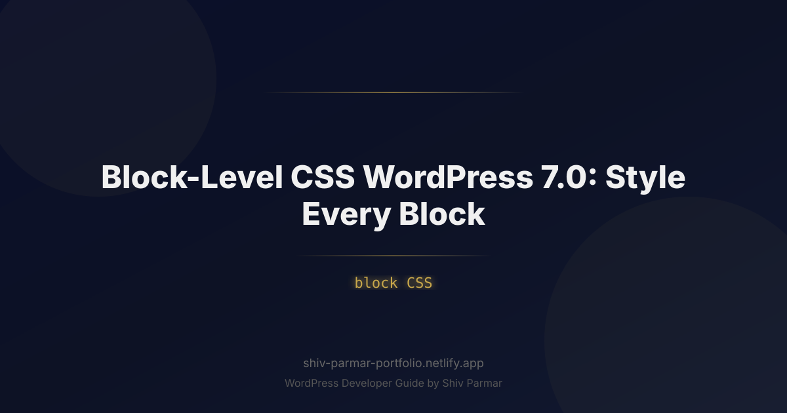

Block-Level CSS WordPress 7.0: Style Every Block | Shiv Parmar
Table of Contents
For over two decades, web designers and developers building on WordPress were forced into a perpetual compromise: balance global stylesheet organization against the convenience of quick layout tweaks. As the Gutenberg block editor matured into full-site editing, the gap between visual layout building and precision styling often left creators wrestling with bloated style.css files, fragile !important rules, or complex child themes just to alter the appearance of a single component.
The release of WordPress 7.0 completely fundamentally changes this paradigm. With the introduction of native, deep-level block CSS controls directly embedded into the Gutenberg site editor engine and backed by advanced architectural updates in theme.json, micro-styling has finally become a first-class citizen in the WordPress ecosystem. Creators can now apply hyper-targeted, performant, and encapsulated styles to any block instance or block type without polluting the global scope.
Whether you are an enterprise developer building high-scale block themes, an agency streamlining client handoffs, or a freelance designer seeking total artistic freedom, mastering block-level custom styling in WordPress 7.0 is essential. In this guide, we will break down how block-level CSS works under the hood, explore practical implementation strategies, examine real-world code examples, and highlight industry best practices for modern Gutenberg development.
What is Block-Level CSS in WordPress 7.0?
At its core, block-level CSS in WordPress 7.0 is a standardized framework for writing, scoping, and injecting CSS rules tied directly to specific Gutenberg blocks. Rather than injecting unstructured inline styles (such as style="margin-top: 10px;") directly into DOM elements, WordPress 7.0 processes custom styles through an encapsulated rendering engine. It generates targeted, scoped CSS classes that are enqueued dynamically only when the block appears on the page.
In early iterations of the Block Editor, adding custom styles to a single block required adding an additional CSS class in the Advanced tab and writing corresponding rules inside the customizer or an external stylesheet. WordPress 7.0 streamlines this entirely through two primary mechanisms: the native Block CSS Inspector Panel and structured block-level object declarations within theme.json (Schema v4).
This dual approach allows developers to manage global component defaults programmatically while giving content creators visual, isolated controls inside the block editor canvas—all while preventing global style leakage.
| Feature Feature | Legacy Customizer / Custom CSS | WordPress 7.0 Block-Level CSS |
|---|---|---|
| Scope Isolation | Global by default; prone to accidental CSS cascade leaks. | Strictly scoped to the target block using parent selectors (`&`). |
| Asset Loading | Loads entire stylesheet regardless of page content. | Zero-unused CSS; assets enqueue conditionally per block instance. |
| Editor Sync | Requires manual backend/frontend enqueueing scripts. | 1:1 real-time rendering in both Gutenberg editor and frontend. |
| Design Token Integration | Manual variable mapping using hardcoded CSS values. | Native access to standard `--wp--preset--*` design tokens. |
| Maintainability | High risk of regression during theme updates. | Centralized via `theme.json` or localized block attributes. |
Why Block-Level CSS Matters in 2026
The modern web demands uncompromising performance, impeccable visual polish, and rapid development workflows. The block-level styling architecture introduced in WordPress 7.0 directly addresses these modern requirements through three key operational pillars.
1. Elimination of Unused CSS for Superior Core Web Vitals
Performance optimization in 2026 centers heavily on minimizing initial DOM render times and eliminating render-blocking resources. Traditional WordPress themes frequently delivered hundreds of kilobytes of unused CSS on every page load. WordPress 7.0’s block-level CSS engine processes rules on a per-block basis. If a page does not contain a target block (such as an accordion or interactive pricing block), its associated styles are never compiled or loaded. This modular asset architecture drastically reduces Cumulative Layout Shift (CLS) and improves Interaction to Next Paint (INP) scores natively.
2. True Component Encapsulation
Modern frontend engineering relies heavily on component-driven development principles popularized by frameworks like React and Vue. WordPress 7.0 brings true component isolation to the Gutenberg editor. By utilizing nested parent selectors (&) within block CSS panels, styles applied to a Group block, Navigation element, or Query Loop card remain completely isolated. You can customize a call-to-action button inside a specific hero section without accidentally altering every button across your website.
3. Client-Proofing and Agency Scalability
For agencies and engineering teams, client site maintenance historically carried the risk of clients breaking responsive layouts when editing content. WordPress 7.0 allows developers to lock down architectural layout structures in theme.json while enabling curated, safe custom CSS fields inside custom block style variations. This provides clients with visual flexibility within strictly defined aesthetic boundaries, dramatically reducing post-launch maintenance overhead.
Step-by-Step Guide to Mastering Block-Level CSS
To take full advantage of block-level custom styling in WordPress 7.0, you must understand both the visual editor controls and programmatic theme.json configurations. Follow this comprehensive guide to implement robust block CSS across your projects.
Step 1: Enabling Block CSS Features in theme.json
Before using advanced block-level custom CSS controls inside the Gutenberg editor, ensure your theme explicitly declares support for native block CSS in your theme.json file. WordPress 7.0 extends the settings.appearanceTools flag to automatically enable high-level visual styling tools, including custom block CSS input areas.
{
"$schema": "https://schemas.wp.org/trunk/theme.json",
"version": 3,
"settings": {
"appearanceTools": true,
"blocks": {
"core/button": {
"customCSS": true
},
"core/group": {
"customCSS": true
}
}
}
}Setting customCSS: true within specific block declarations inside settings.blocks unlocks the dedicated Custom CSS accordion interface within that specific block's Inspector Control panel.
Step 2: Writing Scoped Selectors with the Ampersand (`&`) Syntax
When entering block CSS into the Gutenberg editor's block panel, every CSS rule must be properly scoped to prevent unintended cascades. WordPress 7.0 uses the ampersand character (&) to represent the container block's unique auto-generated class name (e.g., .wp-block-group.wp-element-12345).
Consider a standard **Group Block** configured as a feature card. To add custom glassmorphism effects and modern hover transitions directly to this block instance, insert the following code into the block's Custom CSS panel:
/* Root block container target */
& {
background: rgba(255, 255, 255, 0.05);
backdrop-filter: blur(12px);
border: 1px solid rgba(255, 255, 255, 0.1);
border-radius: var(--wp--preset--radius--large, 16px);
transition: transform 0.3s cubic-bezier(0.16, 1, 0.3, 1), box-shadow 0.3s ease;
}
/* Hover state targeting the root block */
&:hover {
transform: translateY(-6px);
box-shadow: 0 20px 40px rgba(0, 0, 0, 0.15);
}
/* Targeting a specific child element within the Gutenberg block structure */
& .wp-block-heading {
letter-spacing: -0.02em;
background: linear-gradient(135deg, #ffffff 0%, #a5b4fc 100%);
-webkit-background-clip: text;
-webkit-text-fill-color: transparent;
}Notice how the root container state, pseudo-classes, and nested child elements (like headings) are styled in a single, encapsulated block declaration. The engine automatically compiles this into high-efficiency scoped CSS output on rendering.
Step 3: Utilizing Theme Variables (`var(--wp--preset--)`)
A frequent error when applying custom block CSS is hardcoding static hex colors or fixed pixel dimensions. Hardcoding values breaks theme adaptability when switching light/dark modes or updating corporate color palettes. Instead, reference theme presets dynamically inside your custom block styles.
/* Bad Practice: Hardcoded static properties */
& {
color: #1e293b;
padding: 24px;
font-family: Arial, sans-serif;
}
/* Good Practice: Leveraging WordPress Design Tokens */
& {
color: var(--wp--preset--color--neutral-800);
padding: var(--wp--preset--spacing--50);
font-family: var(--wp--preset--font-family--heading);
}When you update your primary design palette within global styles or theme.json, every custom block CSS snippet referencing these standard variables updates automatically across your site.
Step 4: Crafting Dynamic Hover, Focus, and State Styles
Historically, adding dynamic interactive states (such as focus outlines for accessibility or hover reveals for cards) in Gutenberg required custom JavaScript or external CSS plugins. WordPress 7.0 natively supports state selectors inside block CSS, making accessibility compliance simple.
/* Accessible Focus and Active states for custom Gutenberg Block */
& {
outline: 2px solid transparent;
outline-offset: 4px;
transition: outline-color 0.2s ease-in-out;
}
&:focus-within {
outline-color: var(--wp--preset--color--primary);
}
/* Accessible reduced-motion query inside block CSS */
@media (prefers-reduced-motion: reduce) {
& {
transition: none !important;
transform: none !important;
}
}Step 5: Implementing Modern Web Capabilities (Container Queries & `@layer`)
One of the most powerful aspects of WordPress 7.0’s block CSS engine is full support for modern CSS standards, including CSS Container Queries and Cascade Layers (@layer). This enables responsive block designs based on the *container size* of the layout section, rather than the global viewport screen size.
Here is an example of a responsive Media & Text block utilizing container queries inside its custom block CSS configuration:
/* Define the parent block as a container context */
& {
container-type: inline-size;
container-name: card-container;
}
/* Default mobile-first stacked layout */
& .wp-block-columns {
display: flex;
flex-direction: column;
gap: var(--wp--preset--spacing--30);
}
/* When the block container width exceeds 500px, switch to multi-column */
@container card-container (min-width: 500px) {
& .wp-block-columns {
flex-direction: row;
align-items: center;
}
& .wp-block-column:first-child {
flex: 1 1 40%;
}
& .wp-block-column:last-child {
flex: 1 1 60%;
}
}With container queries, whether this block lives inside a narrow sidebar or a full-width hero section, its layout adjusts intelligently based on available space.
Step 6: Registering Custom Block Styles via theme.json
While writing individual block CSS inside the site editor works great for localized tweaks, reusable block designs should be defined systematically inside your theme files. WordPress 7.0 allows developers to supply custom block styles with custom CSS directly within the styles.blocks taxonomy of theme.json.
{
"$schema": "https://schemas.wp.org/trunk/theme.json",
"version": 3,
"styles": {
"blocks": {
"core/image": {
"border": {
"radius": "12px"
},
"css": "& img { filter: grayscale(20%); transition: filter 0.3s ease; } & img:hover { filter: grayscale(0%); }"
},
"core/quote": {
"css": "& { border-left: 4px solid var(--wp--preset--color--primary); padding-left: var(--wp--preset--spacing--40); font-style: italic; }"
}
}
}
}By declaring block CSS in theme.json, these styles apply across every instance of the block throughout your site, maintaining design system consistency while retaining minimal asset overhead.
Best Practices for Block-Level CSS
Adding block-level custom CSS flexibility can lead to maintenance challenges if clear coding standards aren't enforced. Follow these field-tested best practices to ensure your codebases remain clean, scalable, and performant.
1. Enforce Encapsulation Rules Strictly
Never write plain tag names or unscoped classes directly inside the block CSS editor panel (e.g., writing h2 { color: red; } without the & parent selector). Doing so will pollute the global scope, causing your styling rules to leak into unintended sections of your layout or break site editing UI panels.
/* WRONG: Affects every H2 heading on the entire web page */
h2 {
color: var(--wp--preset--color--accent);
}
/* CORRECT: Affects ONLY H2 headings inside this specific block */
& h2 {
color: var(--wp--preset--color--accent);
}2. Limit inline Custom CSS to Block Variations and Components
Avoid scattering hundreds of custom CSS overrides across dozens of unique block instances on content pages. If you notice a particular block style being reused across multiple pages, convert that custom CSS snippet into a registered **Block Style Variation** in PHP or a custom block pattern.
// Functions.php example: Registering a reusable block style with native CSS loading
function theme_register_custom_block_styles() {
register_block_style(
'core/group',
array(
'name' => 'gradient-card',
'label' => __('Gradient Card', 'my-theme'),
'inline_style' => '.is-style-gradient-card { background: linear-gradient(135deg, #1e293b, #0f172a); color: #ffffff; border-radius: 16px; padding: 2rem; }',
)
);
}
add_action('init', 'theme_register_custom_block_styles');3. Modernize Layout Controls with Grid and Flexbox
Avoid old positioning hacks, float properties, or manual margin offsets. Use modern CSS layout models (Flexbox and CSS Grid) inside your custom block styles. WordPress 7.0’s core block wrapper markup works seamlessly alongside native CSS Grid definitions.
/* Create a custom auto-fit grid inside a Gutenberg Group Block */
& {
display: grid;
grid-template-columns: repeat(auto-fit, minmax(280px, 1fr));
gap: var(--wp--preset--spacing--40);
}4. Combine Block CSS with the `:has()` Selector for Dynamic Parent Styling
The modern CSS :has() relational selector pairs effectively with block-level CSS in WordPress 7.0. You can now modify the container block's visual styling based on the presence of specific child elements inside the Gutenberg editor canvas.
/* Highlight a parent Card group ONLY if it contains a featured badge */
& {
border: 1px solid var(--wp--preset--color--neutral-200);
transition: border-color 0.3s ease;
}
&:has(.is-style-featured-badge) {
border: 2px solid var(--wp--preset--color--primary);
background: var(--wp--preset--color--primary-light);
}Common Mistakes to Avoid
As teams adopt block-level custom styling in Gutenberg, certain technical missteps frequently surface. Avoid these common pitfalls to preserve site stability and overall editor performance.
1. Overusing `!important` Flags
One of the main goals of the Block CSS architecture in WordPress 7.0 is to clean up specificity wars. Using !important inside block-level CSS defeats the cascading hierarchy of theme.json styles and makes future adjustments difficult. If your custom block CSS rules aren't applying, check for specificity collisions rather than appending heavy-handed overrides.
/* AVOID: Using !important inside custom block styling */
& .wp-block-button__link {
background-color: #000000 !important; /* Hard to override later */
}
/* RECOMMENDED: Use targeted CSS selector structure */
& .wp-block-button__link.wp-element-button {
background-color: var(--wp--preset--color--black);
}2. Ignoring Light/Dark Color Mode Adaptability
Hardcoding background colors or text colors directly inside individual block CSS blocks breaks site color mode features. If your site adds a dark mode toggle or respects system color schemes, hardcoded colors will not update, creating contrast and readability issues for users.
/* AVOID: Hardcoded static colors */
& {
background-color: #ffffff;
color: #000000;
}
/* RECOMMENDED: Semantic design tokens that update automatically */
& {
background-color: var(--wp--preset--color--background);
color: var(--wp--preset--color--text);
}3. Writing Desktop-First Responsive Overrides
Designing custom block CSS with fixed pixel desktop widths leads to unexpected layout breaks on smaller screens. Always build mobile-first or rely on relative viewport units (rem, ch, %, clamp()) alongside CSS Container Queries.
/* AVOID: Static fixed width definitions */
& {
width: 800px; /* Destroys mobile responsiveness */
}
/* RECOMMENDED: Fluid responsive layout sizing */
& {
width: 100%;
max-width: clamp(320px, 90vw, 800px);
margin-inline: auto;
}4. Forgetting Accessibility and Keyboard State Styling
When applying custom visual styles (such as removing default borders or applying unique focus ring designs), developers often forget to include accessible keyboard navigation styles. Always ensure interactive elements modified via block CSS maintain clear visual indications for focus and active states.
/* AVOID: Stripping default focus styles without offering alternatives */
& a:focus {
outline: none; /* Severe accessibility violation! */
}
/* RECOMMENDED: Modern custom focus ring styles */
& a:focus-visible {
outline: 3px solid var(--wp--preset--color--accent);
outline-offset: 3px;
border-radius: 4px;
}5. Duplicating Styles Across Multiple Blocks
If you find yourself copying and pasting identical 30-line CSS snippets into dozens of distinct Group or Columns blocks throughout your page compositions, pause your workflow. Take those styles out of individual block inspector panels and convert them into an official reusable style variation in your theme's theme.json or `functions.php` file. This maintains a single source of truth for design updates across your entire digital property.
Conclusion
The introduction of block-level features in WordPress 7.0 marks a significant leap forward for modern web design. By giving developers and creators granular control over individual components, achieving tailored custom styling is now cleaner and more intuitive than ever. You no longer need to rely on bloated global stylesheets or cumbersome workarounds—WordPress 7.0 brings targeted design control directly into the Gutenberg editor, streamlining your workflow and boosting site performance.
As the site editing ecosystem continues to mature, mastering block CSS will be essential for building unique, scalable, and maintainable websites. Whether you are fine-tuning responsive spacing, adding micro-interactions, or crafting complex component layouts, block-level styling bridges the gap between visual convenience and developer-grade control, turning every block into a precision design tool.
Ready to unlock the full potential of WordPress 7.0 or need expert help bringing your website vision to life? Shiv Parmar is available for professional WordPress development work for clients worldwide. Whether you need bespoke block customization, performance optimization, or end-to-end site builds, reach out today to elevate your web presence with modern WordPress solutions.